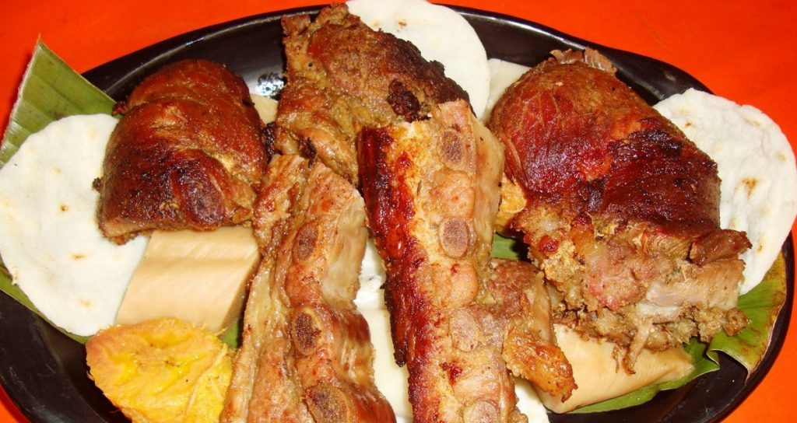

Lugares turisticos
Comida tipica
- BIZCOCHO DE ACHIRAS
- Asado Huilense
- Jugo de Cholupa
En su preparación se utilizan: harina de achira, cuajada fresca, harina de maíz, mantequilla y huevos. El secreto del sabor inigualable esta en amasar los ingredientes sin añadir agua y se moldean los bizcochos que no deben pasar el grueso de un dedo. Posteriormente se hornean en un recipiente (lata) sin engrasar y en cuanto cambien de color, se sacan el recipiente del horno para reposarlos y afiancen su sabor y luego se introduce nuevamente al horno para que se doren y queden gustosos al paladar.
Es un plato de Cerdo Asado y es uno de los platos mas representativos de la Región. Las recetas varían de acuerdos con los gustos de cada pueblo del Huila; tradicionalmente, El Asado Huilense es hecho aliñando la carne de cerdo en cerveza, jugo de naranja agria, verduras, hierbas y especias dejándolo reposar durante un día completo en una batea de barro y luego se asa la carne de cerdo cubierta con hojas de plátano en un horno de barro, lo que da a la carne de cerdo un sabor especial que no se consigue en en un horno convencional. El Asado Huilense se sirve con arepa, yuca cocinada, insulsos y envueltos de plátano.
La cholupa es una fruta propia del departamento de Huila y ha sido reconocida con la distinción de Denominación de Origen. Es de forma ovalada con cáscara de color verde intenso y con tonos amarillos-anaranjados en su interior. Es de sabor dulce y ácido, similar a unamezcla entre maracuyá y granadilla.
Sector economico
La economía del Huila se basa en la agricultura, ganadería, turismo y energía.
- Agricultura: Principal productor de café en Colombia, además de arroz, cacao, caña de azúcar y frutas.
- Ganadería: Cría de ganado bovino y porcino, con una fuerte industria láctea.
- Energía: Generación hidroeléctrica con la represa de Betania y El Quimbo
- Turismo: Destinos como el Desierto de la Tatacoa, el Parque Arqueológico de San Agustín y termales.
- Minería y petróleo: Explotación de petróleo y minerales como el oro y la plata.
Huila tiene una economía diversificada, con un fuerte impulso agrícola y energético.